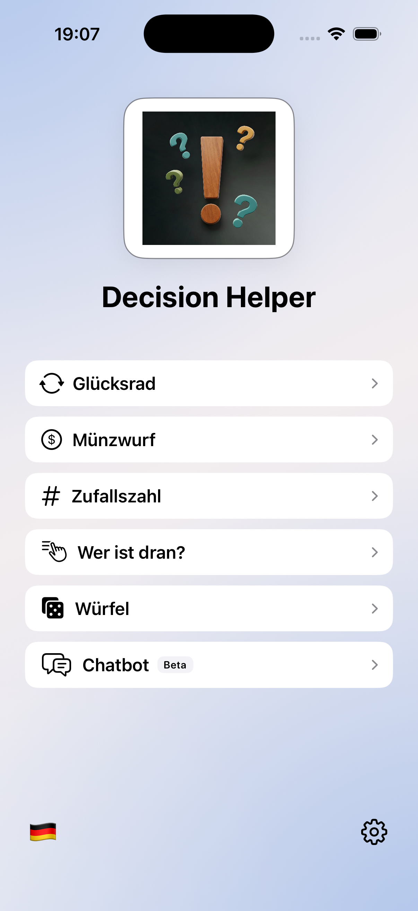

Home
One screen, all modes in reach
Clear navigation, a light theme and the full range of modes in one place.

Private by default
The app stores settings and templates locally on the device. There is no built-in analytics SDK, ad tracking or central cloud for user data.